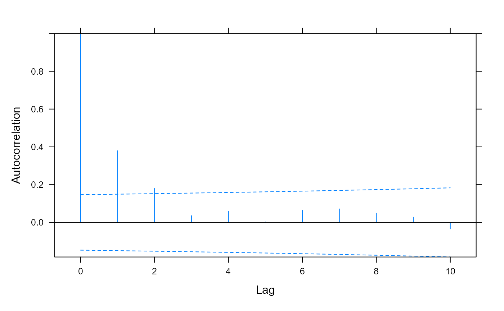

Autocorrelation Function for lme Residuals
ACF.lme.RdThis method function calculates the empirical autocorrelation function
for the within-group residuals from an lme fit. The
autocorrelation values are calculated using pairs of residuals within
the innermost group level. The autocorrelation function is useful for
investigating serial correlation models for equally spaced data.
Usage
# S3 method for lme
ACF(object, maxLag, resType, ...)Arguments
- object
an object inheriting from class
"lme", representing a fitted linear mixed-effects model.- maxLag
an optional integer giving the maximum lag for which the autocorrelation should be calculated. Defaults to maximum lag in the within-group residuals.
- resType
an optional character string specifying the type of residuals to be used. If
"response", the "raw" residuals (observed - fitted) are used; else, if"pearson", the standardized residuals (raw residuals divided by the corresponding standard errors) are used; else, if"normalized", the normalized residuals (standardized residuals pre-multiplied by the inverse square-root factor of the estimated error correlation matrix) are used. Partial matching of arguments is used, so only the first character needs to be provided. Defaults to"pearson".- ...
some methods for this generic require additional arguments -- not used.
Value
a data frame with columns lag and ACF representing,
respectively, the lag between residuals within a pair and the corresponding
empirical autocorrelation. The returned value inherits from class
ACF.
References
Box, G.E.P., Jenkins, G.M., and Reinsel G.C. (1994) "Time Series Analysis: Forecasting and Control", 3rd Edition, Holden-Day.
Pinheiro, J.C., and Bates, D.M. (2000) "Mixed-Effects Models in S and S-PLUS", Springer.
Author
José Pinheiro and Douglas Bates bates@stat.wisc.edu
Examples
fm1 <- lme(follicles ~ sin(2*pi*Time) + cos(2*pi*Time),
Ovary, random = ~ sin(2*pi*Time) | Mare)
ACF(fm1, maxLag = 11)
#> lag ACF
#> 1 0 1.000000000
#> 2 1 0.380191824
#> 3 2 0.180089173
#> 4 3 0.036688753
#> 5 4 0.059951162
#> 6 5 0.001916046
#> 7 6 0.063499044
#> 8 7 0.070979841
#> 9 8 0.049660461
#> 10 9 0.029428152
#> 11 10 -0.032162165
#> 12 11 -0.074003608
# Pinheiro and Bates, p240-241
fm1Over.lme <- lme(follicles ~ sin(2*pi*Time) +
cos(2*pi*Time), data=Ovary,
random=pdDiag(~sin(2*pi*Time)) )
(ACF.fm1Over <- ACF(fm1Over.lme, maxLag=10))
#> lag ACF
#> 1 0 1.000000000
#> 2 1 0.379480128
#> 3 2 0.179722025
#> 4 3 0.035692749
#> 5 4 0.059778881
#> 6 5 0.002096953
#> 7 6 0.064327101
#> 8 7 0.071634861
#> 9 8 0.048578247
#> 10 9 0.027782488
#> 11 10 -0.034275979
plot(ACF.fm1Over, alpha=0.01)
